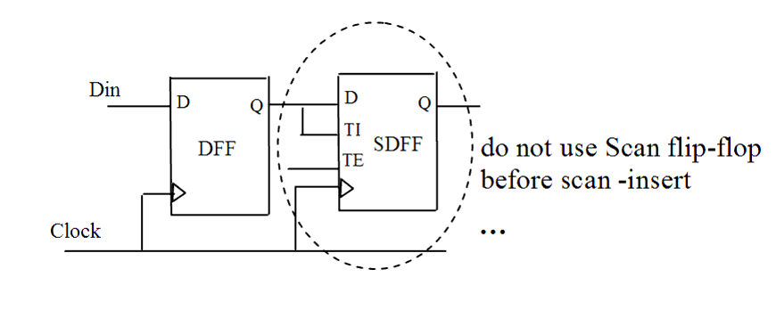

| Description | This rule fires when Leda detects scan-type flip-flops used in functional mode (before scan insertion). It is better not to use scan-type flip-flops in functional mode, because this way you improve the performance of scan chain insertion and avoid functional failures caused by the scan signal. |
| Policy | DESIGN |
| Ruleset | DFT |
| Language | VHDL/Verilog |
| Type | Hardware |
| Severity | Error |
This is an example of invalid Verilog code, followed by a circuit diagram that illustrates the problem:
module ntl_dft36_top; ... // DFF flop-flops exist after compile (synthesis), // but before scan-insert (DFT) DFF U0 (.D(Din), .CP(Clock), Q(net_01) ... // Scan flip-flop cell - SDFF SDFF U1(.D(net_02), .CP(Clock1), .TI(net_01), .TE(Scan_en), .Q(net_03)); // NTL_DFT36 fires -- scan flip-flop in design before scan-insert endmodule